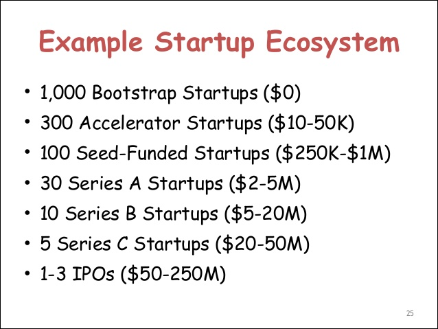
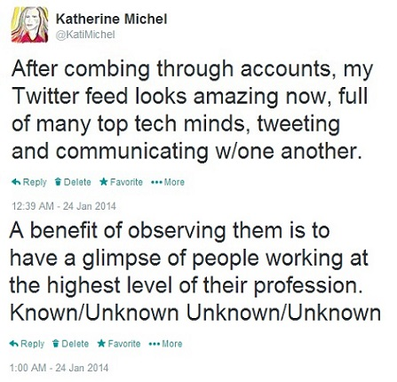
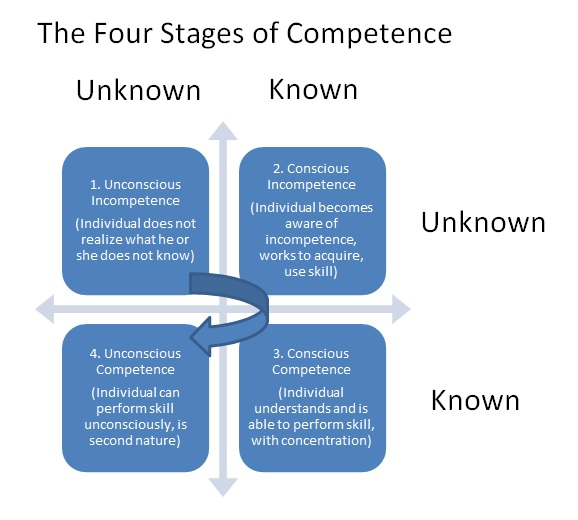
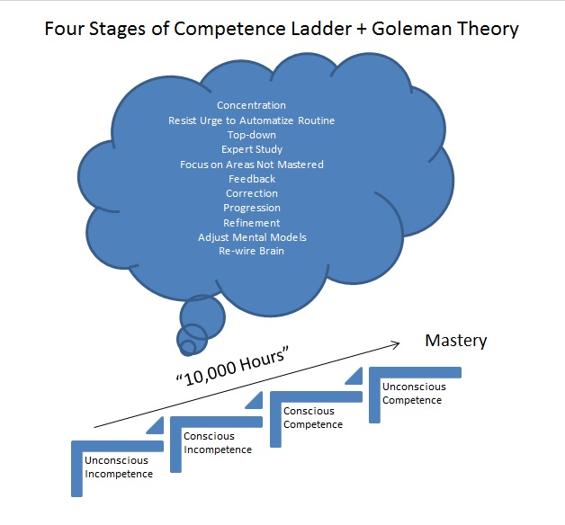
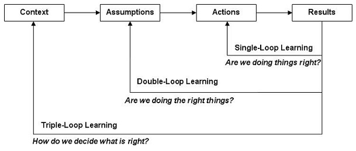
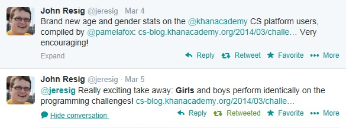
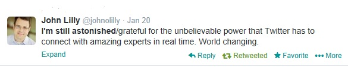
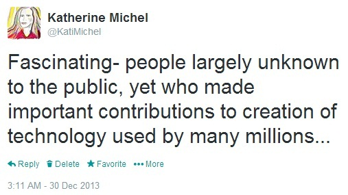

Katherine Michel Blog
Blog Posts Index
The Odds of Winning Buffet Billion Dollar Bracket Challenge vs. Founding a Unicorn
I once saw a financial advisor on television who said that if people who play the lottery would instead invest the money in a stable investment vehicle, although they might not have the big payday people who play the lottery dream of, in the long run they could have a better return.
While recently reading an article about the unlikelihood of winning the Buffet Billion Dollar Bracket Challenge, I began to ponder how the odds compare between making a large payoff through such a challenge and making a large payoff through the blood, sweat, and tears of founding a startup.
In November of 2013, TechCrunch published an article by Aileen Lee of Cowboy Ventures about the probability of a startup achieving unicorn status (having an exit of 1b+). At the time, my impression was that achieving unicorn status is a difficult feat.
However, the odds of achieving unicorn status are still much better than the odds of winning the Buffet Bracket Challenge.
1:1538 (Odds of VC-backed startup since 2003 having a 1b+ exit)
1:9,223,372,036,854,775,808 (Odds of winning Bracket Challenge)
Stats from TechCrunch and Billion Dollar Challenge Official Rules
Of course many startups fail (90% according to Mashable), but the 1:1538 ratio is only taking into account 1b+. Many startups make far less but are still very successful.

['Example Startup Ecosystems' slide from Dave McClure presentation 'Changes in Venture Capital and Building Startup Ecosystems' at Asian Leadership Conference, March 2014]
There are other variables involved, such as the likelihood of having a great idea, having specialized knowledge to execute or being able to recruit someone who does, the ability to secure funding from a VC, the willpower necessary amid the time and stress involved to continue on while others might have given up, all versus the fleeting feeling of glee that people who play lottery have while entertaining the fantasy of winning big.
But similarly to the idea of investing rather than playing the lottery, perhaps people who truly want a large payoff should consider founding a startup instead.
Back to Top Back to Blog Posts Index
Learning from the Masters- The Unknown Unknown

One use of social media that is potentially highly valuable (and I think undervalued) is the opportunity to identity people on social media who have mastered a skill that you aspire to master, follow them, and use the insights you learn from them to work to acquire the skill yourself.
For me, two such people are Benedict Evans (a telecommunications analyst who recently joined the venture capital firm a16z as a partner) and Horace Dediu (also a telecommunications analyst, with a focus on Apple, Inc.).
They were not immediately obvious to me as neither is well known to the public at large. I gradually identified them through curation of the people whom I follow on Twitter.
Both have demonstrated a mastery of statistical and strategic analysis, and with their live-tweeting and blogging, are often the go-to people for insights when tech news with a quantitative angle breaks.
Watching them at work can be both humbling and exciting to witness.
Humbling in that it offers an opportunity for an individual to conduct a gap analysis that results in an awareness of the shortcomings of his or her own skills in comparison.
Exciting, because an awareness of the gap between where you are and where you would like to be can provide the direction needed to take on the challenge of creating work equal to theirs.

I find it fascinating that virtually anyone with access to the internet can remotely observe (and even join in) the collective conversation that takes place on social media among members of the tech community who are operating at the highest level of expertise in their respective specializations.
This is one possible method of developing an invaluable awareness of the elusive Unknown Unknown (a dilemma in which an individual does not realize what he or she does not know), enabling movement from Stage 1. to Stage 2. in the Four Stages of Competence Model, developed by Noel Burch.

Seeking to emulate high performing creative thinkers such as Benedict Evans and Horace Dediu can provide the awareness and focus that according to Daniel Goleman, is needed to achieve mastery.
In an excerpt from his book "Focus: The Hidden Drivers of Excellence," Goleman argues that the commonly accepted philosophy that it takes 10,000 hours to master a skill is not enough. The approach to learning matters.
"After about 50 hours of training –whether in skiing or driving – (amateurs) get to that "good-enough" performance level, where they can go through the motions more or less effortlessly. They no longer feel the need for concentrated practice, but are content to coast on what they’ve learned.
The experts, in contrast, keep paying attention top-down, intentionally counteracting the brain’s urge to automatize routines. They concentrate actively on those moves they have yet to perfect, on correcting what’s not working in their game, and on refining their mental models of how to play the game."

In my opinion, the crucial common denominator shared by the Four Stages of Competence and Goleman Theory is the awareness and acceptance of shortcoming. Only when acceptance happens, can defensiveness be surrendered and replaced by new ways of thinking never before considered.
According to Chris Argyris, this surrendering of defensiveness is counterintuitive, but critical to the kind of long-term learning that is important to innovation. Argyris, who developed the Single and Double-Loop Learning Models, believed that it is preferable to temporarily fail in the interest of reflective learning, than to remain in one’s comfort zone and enjoy repeated, superficial success.

I am committed to mastering areas that I believe to be value-adding for professional development. A goal of mine in the coming months is to increase my use of Benedict Evans and Horace Dediu style statistical analysis (which I believe is sorely lacking in the online world, not to mention that it requires valuable, technical skills) when forming an opinion, and decrease my use of conjecture.
Let the quantitative analysis commence!
Back to Top Back to Blog Posts Index
Programming- Finding a Needle-in-a-Haystack Solution"
"Practically all the software in the world is either broken or very difficult to use. So users dread software. They’ve been trained that whenever they try to install something, or even fill out a form online, it’s not going to work. I dread installing stuff, and I have a Ph.D. in computer science."
—Paul Graham, in Founders at Work by Jessica Livingston
I remember the first time that I sat down at a computer and set out to create a website. Rather than taking an online course, I wanted to go off the beaten path and discover the fundamentals for myself.
The bloated tools that I used then based on a website that I had seen and hoped to emulate, were very different than the more lightweight, agile tools that with more knowledge and experience, I would have chosen today.
Navigating through the web hosting company's labyrinth of a site, I finally found my web hosting account and installed the files. I was eager to see a visible result on the screen.
But nothing happened. I sat in front of an empty, snow-white webpage, pondering how to make the website come to life.
Every time I thought I had found the definitive solution (such as pointing the domain name to the website) and hit the save button, when I refreshed the browser, the empty snow-white webpage remained maddeningly unchanged.
Through the process, I would learn to my chagrine, that a plugin intended to facilitate a key functionality of the website template no longer worked since a software dependency upgrade.
It would be the first of many instances since then in which I would scour the internet, reading advice from official software documentation, tutorials, and forum posts in order to cobble together a solution that felt like a needle in a haystack.
It didn't help that forum posters who seemed to be in the know would often offer solutions, but not go into simple detail, instead assuming that readers would magically know what to do. These frustrating assumptions can be a barrier of entry for novices learning to program.
At one point, having finally found a straightforward, simple to implement explanation for what I now know to be one of the most basic and important parts of a website, I was surprised that the information hadn't been shouted from the internet mountaintops, but had come from a brief, homemade blurb on an obscure website that I had randomly happened upon after much searching.
Contrary to what I believed at the time, finding a needle in a haystack solution was far from an isolated incident.
"Unfortunately, lots of things can go wrong along the way... the only general solution is web searches and determination."
-Michael Hartl in Ruby on Rails Tutorial on getting development environment up and running
Even as my sophistication in web development has increased, it has been rare that the steps that have worked for me (for instance in installing and running software from source), have been the same as the steps in the official documentation on software sites, (which usually tout their software as being easy to install).
The key has been to not give up, but to try different potential solutions until stumbling across or inventing a bespoke solution that works. It turns out that it's not just me. This is just a part of programming.
The more time I spend reading software books and forum answers (places non-programmers would not normally venture), the more often I come across comments from programmers suggesting that not only do they not have all of the answers (as non-programmers often seem to believe), but that they are dealing with the same bugs as me.
"I am warning you; this will be frustrating. In the business we call this "yak shaving." Yak shaving is any activity that is mind numblingly, irritatingly boring and tedious that you have to do before you can do something else that's more fun. You want to create cool Python projects, but you can't do that until you set up a skeleton directory, but you can't set up a skeleton directory until you install some packages, but you can't install packages until you install package installers, and you can't install package installers until you figure out how your system installs software in general, and so on.
Struggle through this anyway. Consider it your trial by annoyance to get into the programmer club. Every programmer has to do these annoying tedious tasks before they can do something cool."
-Zed A. Shaw, Learning Python the Hard Way
I recently wrote on Twitter: "I think there is a misconception among non-programmers that programmers have all the answers, and it's just not true. They simply persist."
In persevering to move beyond "yak shaving," it often crosses my mind that less determined people have already given up, leaving the building of web apps to the "professionals," who were simply motivated to survive the messy stuff for the sake of learning.
And indeed, my search engine queries have often contained results for web development products that advertise that they require no coding, the opposite of what I want.
Perhaps in some cases this is for the best.
When people take a programming course, solutions are often provided to the problems that can be found throughout the course. As the programmer becomes more sophisticated, there are no solutions to be found at the end, except those that the programmer invents.
Obviously this isn't for everyone. There are some people who are destined to give up one way or the other.
On the other hand, I can't help but believe that there are others out there who don't realize that with enough confidence and determination, they could be great programmers. And wouldn't it be nice if universal programming instruction could become more transparent and user-friendly while we're at it.
Back to Top Back to Blog Posts Index
Me, My Brother, and His Apple IIe: Exploring the CS Gender Divide

CNET Editor, Dan Ackerman: "WWDC (Apple's World Wide Developers Conference) explained in one photo"
When I was nine years old, I awoke in the middle of the night unable to fully open my eyes. I groped my way to the bathroom, turning on the light as I felt my way along, only to find as I stared into the mirror that my face had swelled up into a shape that my relatives would soon compare to that of a Cabbage Patch Kid doll, a popular toy for girls at the time.
I was a “tom boy” and this was not the first time that I had contracted poison ivy while exploring the neighbourhood, although it was my first time to have poison ivy in my entire face and eyes.
In the morning also came the news that my great-grandmother had passed away. My immediate family would travel to be with our extended family for the funeral.
For most of my life, my most vivid memory of the experience was that my face was distorted at a time when I would come into contact with many relatives whom I had never seen before and whom I have never seen since, and that I would have soon been hospitalized, had it not been for a painful cortisone shot during which my grandfather empathetically held my hand without me having to ask.
My uncle, with a few hundred dollars of his inheritance money from my great-grandmother’s estate, by chance happened to purchase a used Apple IIe computer as a present for my brother, who is four years older than me. [Photo: There she is, the Apple IIe] Maddeningly to my self of today, I had no strong feeling about the gift at the time. It was obviously the sort of thing that my brother would like. He was a Star Wars, Atari, Popular Science kind of kid. Physically, he even looked similar to a young, nerdy Bill Gates.
But it was 1986 and few people had actually heard of Bill Gates back then. [Photo: Bill Gates, Boy Wonder c.1983] My brother’s Apple IIe was my first distinctive memory of a computer, and for a household even to possess a personal computer at that time was rare, which has always been a point of pride for my brother. It would be another ten years until, while working in a campus library as a college student, I would periodically overhear a reference librarian teaching small groups of people how to use the new search engine Yahoo, my first distinctive memory of the Internet.
Although occasionally, I was allowed to play Snake Byte on the Apple IIe, my brother was overly protective of that computer, reluctant to let me near, although I did not really argue. In all honesty, I’m still not quite sure exactly what he was doing at the keyboard of that computer.
[Photo: Snake Byte Level 2, snake being turned, apple on right] {Snake Byte: With you controlling the direction of the ever-moving snake by using the keyboard arrows, the “Snake” should only “Byte” the apple, never running into itself or its surroundings, making for some rather delicate maneuvering as the snake grows longer and the surroundings and placement of the apple become more complicated with each level successfully completed}
As part of my brother’s love for computers, my grandparents paid for him to attend “Computer Camp.” I remember riding in the car with the family to the camp dormitory at a nearby college and innocently asking, when would I get to go to "Computer Camp" and the awkward sighs and silence that ensued that meant that I had said the wrong thing because “Computer Camp” was something special intended just for my brother and not for me, and that it fit my brother and not me. In fairness to my grandparents, although they did conform to some cultural norms of their time with which I disagree, my grandmother was quite technologically savvy in comparison to many others of her generation. For instance, she had a computer long before grandmothers really had computers.
But why did it fit my brother to be given a gift of an Apple IIe computer and to go to “Computer Camp” and not me: because of differences in personality, because of psychological conditioning caused by societal stereotypes, or a combination of both?
I’ve begun to seriously mull over this question after having seen a photograph posted recently on Twitter by CNET Editor Dan Ackerman and captioned: “WWDC explained in one photo.”
The photo, apparently taken at Apple’s Worldwide Developers Conference, shows a Women’s Bathroom with no line and a Men’s Bathroom with a very long line. The posting of this photo was quickly followed up by Megan Garber’s Photo Essay in The Atlantic: "Ridiculously Long Men’s Room Lines at Tech Conferences," in which she cited many other similar instances.
Pondering this gender divide, I find myself thinking back to my brother and that Apple IIe computer and how for me it was an opportunity lost so many years ago. I envy these male developers, whom I imagine, like my brother, to have predominantly taken an interest in Computer Science early in life, naturally and without negative judgement from those around them. If only I could magically go back and learn alongside my brother, how much more native might my computer knowledge be? Perhaps I would have been one of the lone women using the Women’s bathroom at the WWDC.
But the developers are not exactly to blame. Women themselves and society have a role to play in this gender divide. I do not exactly imagine there to be a conspiracy against women amongst the developer community. The jobs should go to the best candidates and maybe it’s not the fault of these male developers if they happen to have the right technical skills and serendipitous insider knowledge at the ready. Perhaps there is a bit of male chauvinism, just as there is in society in general, but in life, I assume the existence of sexism to be the exception to the rule, and when I encounter it, I view it as a character flaw on the part of the sexist person, not me.
I think of developers in general as being something like a developer friend of mine who is one of the most affable people you would ever meet. He dabbled with computers as a teenager (a computer was not available when he was a child), including having created his own video game, with apparently no particular intention of a career in Computer Science, and some years later seemingly fell into a job with a now famous computer company, just when the Internet was taking off. He’s been on track from then on, now with many years of indisputable experience behind him from working for a variety of the top computer companies. I told him, “You are lucky.”
As a teenager, I also made an attempt to learn basic computer programming, during a high school course. The teacher’s sophistication was such that he had difficulty coming down to the level of a novice and I felt like a failure by the end of the first lesson. I’ve since realized that this experience was a small fish in a much larger pond and that his teaching style was to blame, not my aptitude.
As a youth, just as my brother had been categorized as being a computer whiz, I was heavily praised for my natural gift for English and I gravitated to the comfort of this subject, with no one suggesting otherwise. Over time, especially after having entered the workforce, I became increasingly more aware of the value that skills in the so-called “STEM” subjects I had been gravitating away from (Science, Technology, Engineering, Math) could have to my professional career advancement.
Since then, I’ve taken steps to catch up through years of dedicated study, and have proven myself to be equally capable in “STEM” subjects such as Quantitative Math and Computer Science, if not more capable, than many of my male counterparts, causing me to think that the belief that boys are more suited to “STEM” subjects is a myth perpetuated by psychological conditioning in society.
An experiment called the “doll test,” conducted in 1947 illustrates the illogical, psychological impact our surroundings can have on our beliefs about ourselves and others. African American children, who had been segregated from white children, were shown dolls with dark skin and dolls with white skin. The children consistently identified the white dolls as having more favorable characteristics than the black dolls, a skewed result of the segregation.
Just as in this experiment, in which one color of skin is not inherently more favorable than another, I believe that one gender is not inherently more capable of mastering a “STEM” subject than the other. But in a world in which girls are encouraged to play with toys that promote beauty and domesticity, society still communicates otherwise, even if subconsciously.
 While my brother’s motivation for studying Computer Science began as a hobby, my motivation for studying Computer Science has been result: firstly the hoped result of a stable career that would provide me with a comfortable standard of living for the long term, but also the hoped result of having positively empowered others to improve their own lives through the use of technology.
Even by the day, the larger picture of the potential good that the magic of technology can bring to the lives of people around the world is coming ever more into focus. My realization only grows stronger of the compatibility between Computer Science and my personal aspirations.
For instance, beginning during my days of working for U.S. Immigration, International Development has been a subject of interest to me, and I’ve been enthused by recent reports by the World Economic Forum ("Forces Transforming the Content Landscape") and Google ("Project Loon"), for instance, of the role that mobile technology is expected to play in the development of some of the most impoverished regions of the world, places where, ironically, the lack of empowerment among women is often an obstacle to progress.
Looking at the WWDC photo and the long line of male developers who would be likely to produce the aforementioned sort of mobile technology, I’m unfortunately again reminded of this imbalance.
Even with his head start in Computer Science skills though, my brother was probably not present at the recent WWDC. He aspired to work in fields other than pure Computer Science, only to somewhat reluctantly fall back on his computer skills as an easy source of income when necessary.
Ironically, in the past few years, I’ve been the one who has aspired to a career in Computer Science at a higher level. I’ve proactively sought out and been considered for employment at a few of the world’s most high profile computer companies, although however close I may have come, a job offer has been elusive. I have not been the “perfect” fit for a job.
But on the bright side, I’ve reached stretch goals that many who knew me as a child would probably never have expected. I just happen to believe that many of us face difficult obstacles and that the people who achieve the unexpected are simply the people who find a way to make it happen.
I periodically reflect on times in history when what was once believed unlikely, became not only possible, but instantly the new standard. For example, when a runner first broke the four minute mile barrier in 1954, soon thereafter many did, probably because it was simply demonstrated to be possible. This leads me to believe that at that level of athletic performance, the crucial factor in suddenly breaking the barrier or not, had more to do with psychology than physicality.
I’ve found that the most difficult step to a breakthrough can be simply to suspend all negative thoughts and begin striving. Once you do, while many others around you are content to accept ready-made technology solutions, you may, like me, become addicted to the notion of having a better understanding of the complex global computer platforms by which we are surrounding and aspire to leverage this understanding of how the world operates to shape the world of tomorrow.
Although certainly some aspects of Computer Science, such as complex algorithms, could be likened to the proverbial “Rocket Science,” once you’ve fully immersed yourself in the technology space and begun to speak its language, you might be surprised to find that some aspects of Computer Science are much easier to understand than might be imagined. Sometimes, while studying HTML and CSS, I’ve stopped and thought, ‘That’s it?’ as though having uncovered a secret that only members of a secret society know. Although yes, requiring some specialized skill, real human beings, dare I say even women, can surely do this work.
Consider this: Even Apple was an outsider once, intent upon re-inventing the technology world as an underdog start-up, born in the formidable shadow of the established competition: IBM.
Adelia Cellini in a 2004 Macworld article: “The Story Behind Apple’s ’1984′ TV Commercial”:
"Let's see- an all-powerful entity blathering on about Unification of Thoughts to an army of soulless drones, only to be brought down by a plucky, Apple-esque underdog. So Big Brother, the villain from Apple's '1984' Mac ad, represented IBM, right? According to the ad's creators, that's not exactly the case. The original concept was to show the fight for the control of computer technology as a struggle of the few against the many, says TBWA/Chiat/Day's Lee Clow. Apple wanted the Mac to symbolize the idea of empowerment, with the ad showcasing the Mac as the tool for combating conformity and asserting originality. What better way to do that then have a striking blonde athlete take a sledgehammer to the face of that ultimate symbol of conformity, Big Brother?"
[Video: Iconic Apple Commercial Introducing Macintosh Computer]
We all have to start somewhere.
Photo Credits:
WWDC: Dan Ackerman
Twitter as a Professional Development Tool

After having created my webpage as a social media platform, I was faced with the dilemma of the sheer volume of information on the internet and how to find meaning within this labyrinth of “noise.” Virtually anyone can identify him or herself as an expert.
I once read an assertion that if a great entrepreneur were to hypothetically start over with nothing, the entrepreneur could rebuild his or her empire again over time using inherent skill. As I imagined a great entrepreneur would, I wanted to identify the shortest, most logical path from point A to point B in identifying who the most credible and effective social media communicators are and how they set themselves apart from the rest, in order to learn from the best.
Perhaps the best place to start is Twitter. Why Twitter?
I've recently begun to marvel at what I believe to be the untapped potential of Twitter and how I haven’t randomly come across stories of people using Twitter for professional development (The Twitter stories I usually hear seem to be about celebrity tweets gone wrong instead). Twitter could be as valuable as a learning tool as it is as a communication tool.
I suspect that due to the very nature of the ways in which Twitter and Facebook are organized, their demographics are very different. Many casual social media users habitually gravitate to their closed personal networks on Facebook as a default social media platform. Meanwhile, for social media power-users operating at the forefront in identifying news and trends as they happen, Twitter activity is a necessity.
Using the Technology Industry as an example, Twitter is a potential goldmine for Technology Industry information and contacts.

The Twitter Technology Industry world is a surprisingly small and agile one, with many of the Technology Industry elite openly communicating amongst one another in real time and accessible to the public. Many may be well known within Technology Industry circles, but are not necessarily household names to the larger world, and can be identified on Twitter through fairly simple research (the focus of a future blog post of mine- Identifying High Value Social Media Content and Contributors).
Still, very few of my friends use Twitter regularly, let alone even have an account, and those who do use Twitter regularly tend to combine their personal profile with a professional role that involves communicating with the public. Although I can’t help but feel that for the right people, people such as myself, much potential is going untapped, maybe this sort of Twitter natural selection is for the best.
For instance, although these days, it almost seems as though it should go without saying that in an open environment such as Twitter, literally anyone who has access to the internet can view your content, even social media editors at the height of their profession can have trouble knowing where to draw the line.
Perhaps the best example of this is "The Great Social Media Implosion of 2013" that occurred earlier this month between the former Reuters Deputy Social Media Editor Matthew Keys (ironically, who inspired me to create my webpage and begin this social media journey) and now former Bloomberg Social Media Editor Jared Keller. Not the proudest moment for social media.
In other words, if you are not fairly confident that the ROI (Return on Investment) of your own Twitter presence would adequately outweigh the risk of over-exposure, then perhaps you should stick to Facebook.
Back to Top Back to Blog Posts Index
Creating a Webpage as a Social Media Platform
I happened to be scrolling through my Twitter News Feed one day and a smattering of articles suddenly appeared about a Reuters Deputy Social Media Editor Matthew Keys who had been indicted that day for having allegedly conspired with hacker group Anonymous to deface www.latimes.com, owned by the parent company of Keys's former employer.
Curiosity piqued, like some sort of Twitter voyeur, I found myself locating his Twitter page to better understand what made this digital journalist who had made it big-turned alleged perpetrator of cyber-crime tick and perhaps to see his reaction.
I can't remember which happened first- that I was surprised by his continued online presence in which with little fanfare he professed his intention for "business as usual" (even reporting on his own indictment) or that I clicked on the link to his personal webpage www.matthewkeys.net and was entranced by its beautiful presentation and social media dynamism (Update: link leads to archive, because the webpage is no longer in existence).
Having years ago been an artist in a lab for professional photographers, I immediately fell in love with the way in which large, high resolution photographs flashed across the entire surface of the screen, lingering for a few moments before fading into the next photograph in the series, known by its technical term as a "fullscreen carousel gallery."
And the dark ribbon across the top of the page with his name as a logo and direct links to his impressively leveraged cadre of social media resources.
I suddenly longed for something similar as my own and pondered how it could be done. In addition to the outright appeal of the page, I was fascinated by the idea that Matthew Keys had built this social media empire with the same tools available to so many others, and he had done it in part while unemployed, undoubtedly contributing to his rise to Deputy Social Media Editor, Reuters.
On a whim, I looked up my own domain name and was surprised to find it unclaimed. I took this as a sign and immediately purchased the name.
Unfortunately, I found while using apparently the same internet service provider and template that according to the internet Matthew Keys has used, that creating a www.matthewkeys.net inspired webpage was not nearly as straightforward as I might have hoped. Yes, the template's presentation can be beautiful, but that is, if you can make it work.
While searching the Internet for ideas for creating bespoke design solutions, I came across tech forum posts from fellow template users who had made requests for help and when I would click on the link provided by the template user to his or her site, more often than not, even months after the post was made, the site would be in a state of major disrepair.
Like some sort of parent to a newborn webpage, I found psychologically that once my baby webpage www.katherinemichel.net existed in a presentable state, I pondered how I had ever lived without it. Not all of the bugs have been worked out between the internet service provider and my page and I have a near heart attack at the slightest hint of a glitch that needs fixing as still sometimes happens, particularly on Friday mornings for reasons as of yet unknown to me. (Update: although no additional Friday fix was required for many months after this post was originally published, left to its own devices the website layout changed of its own volition and is now in need of repair).
Looking back, I'm glad that I've done it though.
Unlike being chauffeur driven by a page completely built by someone else, creatively speaking, I am as though with the keys to my own car with the freedom to travel where I may choose, or at least that's how it seems. In other words, for better or worse, it's mine.
To where I'm headed, I'm not yet sure, but this has already been a demanding, exhilarating and satisfying adventure.
Back to Top Back to Index